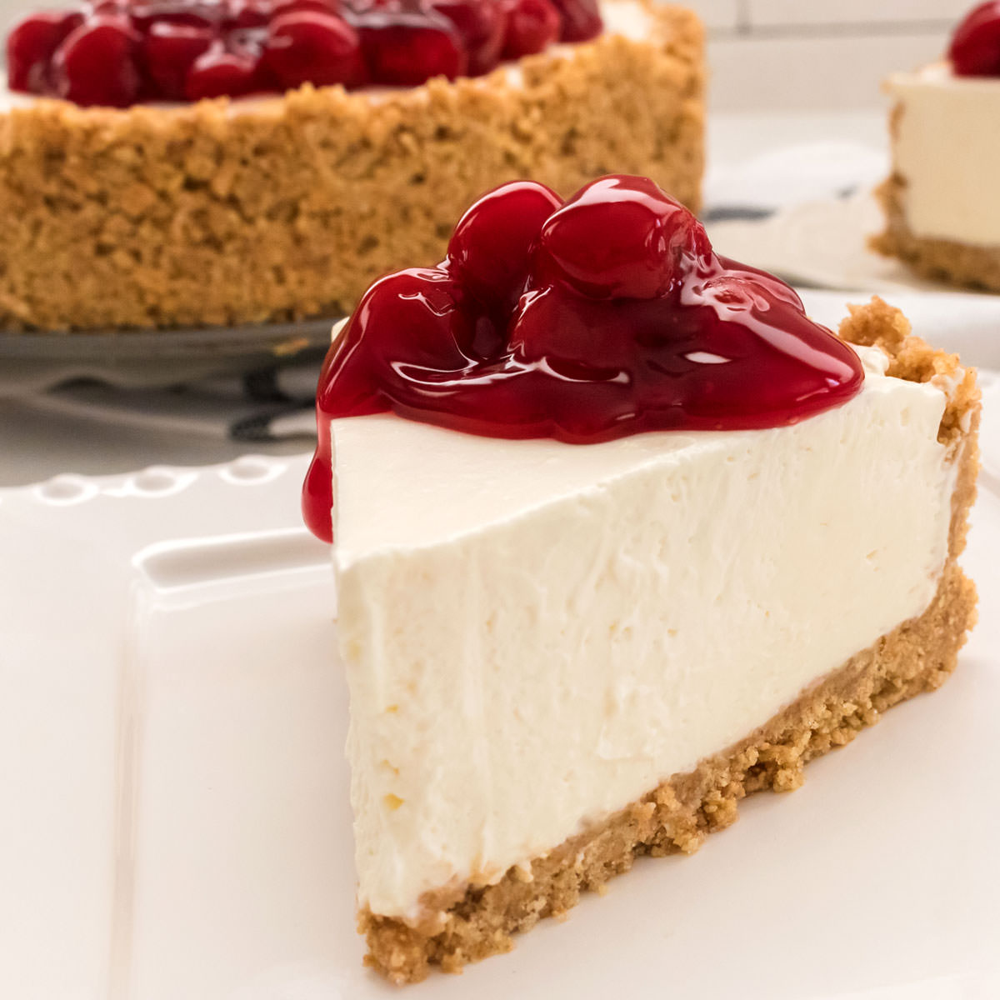

Macaroni

Description:
-
Brick cream cheese: Four 8-ounce bricks of full-fat cream cheese are the base of this cheesecake. That’s 2
pounds. Make
sure you’re buying the bricks of cream cheese and not cream cheese spread. There are no diets allowed in
cheesecake, so
don’t pick up the reduced-fat variety!
-
Sugar: 1 cup. Not that much considering how many mouths you can feed with this dessert. Over-sweetened
cheesecake is hardly cheesecake anymore. Using only 1 cup of sugar gives this cheesecake the opportunity to
balance tangy and
sweet, just as classic cheesecake should taste.
-
Sour cream: 1 cup. I recently tested a cheesecake recipe with 1 cup of heavy cream instead, but ended up
sticking with my original (which can be found here with blueberry swirl cheesecake!). I was curious about
the
heavy cream
addition and figured it would yield a softer cheesecake bite. The cheesecake was soft, but lacked the
stability
and richness
I wanted. It was almost too creamy. Sour cream is most definitely the right choice.
A little flavor: 1 teaspoon of pure vanilla extract and 2 of lemon juice. The lemon juice brightens up the
cheesecake’s overall flavor and vanilla is always a good idea.
-
Eggs: 3 eggs are the final ingredient. You’ll beat the eggs in last, one at a time, until they are *just*
incorporated.
Do not overmix the batter once the eggs are added. This will whip air into the cheesecake batter, resulting
in
cheesecake cracking and deflating.